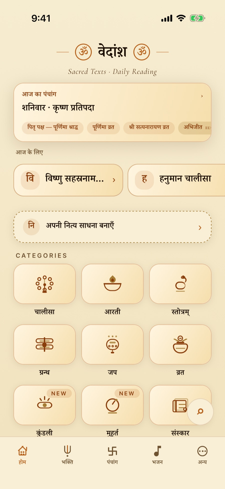
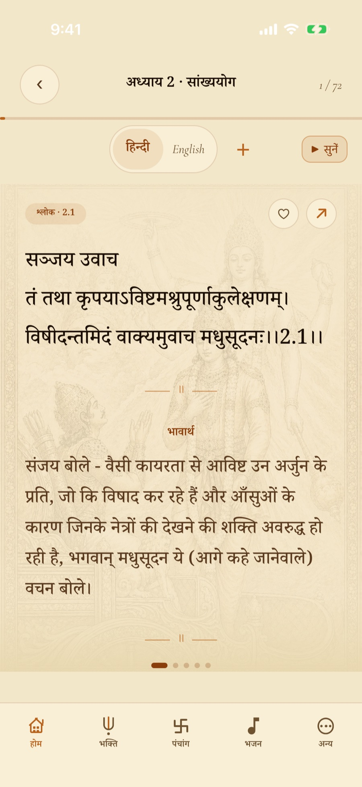
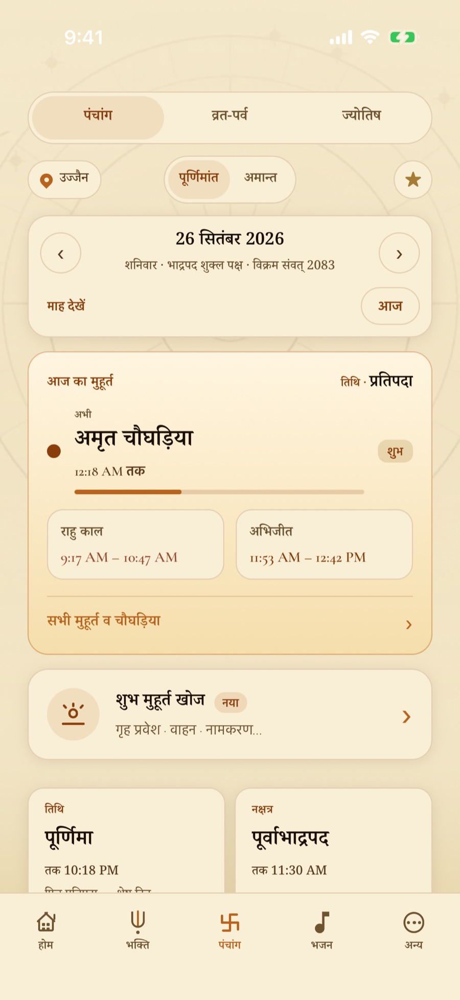
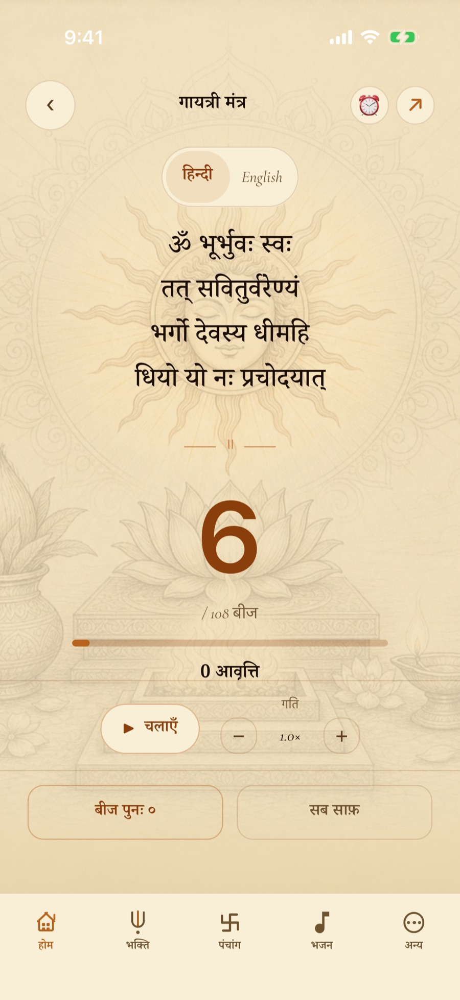
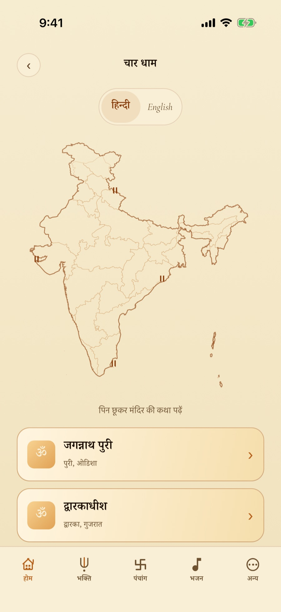

Vedansh
वेदांश़
भगवद् गीता, पंचांग और जप
वेदों का एक अंश, आपकी जेब में। ग्रंथ एक ऐसे पाठक में जो पुस्तक सा लगे, आपके नगर के लिए गणना किया गया पंचांग, और एक साधना जो निभती रहे — सब कुछ बिना इंटरनेट के।
कोई खाता नहीं · कोई विज्ञापन नहीं · कोई ट्रैकिंग नहीं

- 701गीता के श्लोक
- 80+व्रत एवं पर्व कथाएँ
- 4पठन भाषाएँ
- 0विज्ञापन, खाते, ट्रैकर
पावन पुस्तकालय
एक पाठक, जो पुस्तक सा लगे
भगवद् गीता के सभी अठारह अध्याय और 701 श्लोक, अर्थ एवं व्याख्या सहित। सुंदरकांड और रामचरितमानस के अंश, विष्णु सहस्रनाम, चालीसा, आरती, स्तोत्र, और बच्चों के लिए संस्कार — एक पृष्ठ पर एक श्लोक, भोजपत्र पर, उसी लिपि में जिसे आप सचमुच पढ़ते हैं।
- हर श्लोक हिन्दी और अंग्रेज़ी में — साथ में गुजराती और कन्नड़
- संस्कृत ग्रंथों के लिए IAST लिप्यंतरण
- श्लोक से श्लोक तक स्वाइप; जहाँ छोड़ा वहीं से आगे
- पठन-आकार, बुकमार्क और साझा करने योग्य श्लोक-कार्ड
- पूरे पुस्तकालय में तुरंत खोज

पंचांग एवं मुहूर्त
आपके नगर के लिए गणना किया गया दिन
तिथि, नक्षत्र, योग, करण और सूर्योदय — एक वास्तविक खगोल-गणना से, किसी तालिका से नहीं। पूर्णिमांत और अमांत दोनों पद्धतियाँ, विक्रम संवत, और पूरा मास-कैलेंडर जिसमें आप आगे-पीछे चल सकें।
- दैनिक मुहूर्त: चौघड़िया, राहु काल और अभिजित एक दृष्टि में
- व्रत, पर्व और 80+ कथाएँ — जिन्हें आप मानते हैं उन्हें अपनाएँ
- जिन दिनों को आप निभाते हैं, उनके लिए सौम्य स्मरण
- स्थान वैकल्पिक है; नगर चुनने की सुविधा (उज्जैन डिफ़ॉल्ट) बिना उसके भी काम करती है

व्रत, कथा एवं विधि
जो व्रत आप रखते हैं, और क्यों
जिन व्रतों को आप मानते हैं उन्हें अपनाइए और वेदांश़ उन्हें पूरे वर्ष साथ लेकर चलता है — हर एक के साथ पढ़ने को कथा और निभाने को विधि, ताकि वह दिन केवल कैलेंडर पर चिह्न न रहे, समझ में उतरे।
- जिन व्रतों को आप रखते हैं उन्हें अपनाएँ; ऐप वर्ष भर उनका हिसाब रखता है
- जिन दिनों को आपने अपनाया, उनके लिए वैकल्पिक स्मरण
- हर व्रत और पर्व की कथा — 80 से अधिक
- विधि हिन्दी और अंग्रेज़ी में: व्रत किस प्रकार रखा जाता है, चरण-दर-चरण
- पितृ पक्ष अपनी कथाओं के साथ, और दान कथाएँ भी
नित्य साधना
एक साधना जो सचमुच निभे
दिन के अनुसार सही देवता के साथ नित्य या वार-आधारित क्रम बनाइए। संकल्प लीजिए — चार से इकतालीस दिन का निर्देशित क्रम — और ऐप आपको पूर्णता तक ले चलेगा।
- 4 से 41 दिन के संकल्प, अंत तक अनुसरित
- 108 मनकों की माला के लिए डिजिटल जप-गणक
- जप अलार्म: ॐ नमः शिवाय, गायत्री मंत्र या हरे कृष्ण महामंत्र के साथ जागिए — दोहराव और एक दिन छोड़ने की सुविधा सहित
- साधक प्रोफ़ाइल: पाठ, मनके, माला और निरंतरता

तीर्थ एवं श्रवण
तीर्थ, और साथ बैठने को एक स्वर
भारत के धामों को वास्तविक भूगोल के मानचित्र पर देखिए — राज्य से, श्रेणी से, या यात्रा-क्रम से — हर एक के साथ स्रोत-सहित मंदिर-कथा। और भजन, मंत्र तथा आरती के लिए एक शांत अंतर्निहित प्लेयर, जो पृष्ठभूमि में चलता रहता है।
- वास्तविक भूगोल पर धाम — राज्य, श्रेणी या यात्रा से देखिए
- हर स्थल की स्रोत-सहित कथा
- भजन, मंत्र और आरती अंतर्निहित प्लेयर में
- पृष्ठभूमि ऑडियो, ताकि स्क्रीन बंद होने पर भी श्रवण चलता रहे

और भी भीतर
और भी बहुत कुछ
ऊपर के पन्ने ऐप का दैनिक हृदय हैं। ये सब उसके साथ आते हैं।
- कुंडली — जन्म कुंडली, पूरी लिखित रिपोर्ट सहित
- मुहूर्त खोज — गृह प्रवेश, वाहन या नामकरण के लिए तिथि चुनिए
- संस्कार — संस्कार, बच्चों के पढ़ने योग्य भाषा में
- शुभ आदतें — छोटे दैनिक अनुशासन, हिसाब सहित
- होम-स्क्रीन विजेट — पंचांग, एक श्लोक, या आपकी जप-संख्या
- खोज — पूरे पुस्तकालय के लिए एक ही खोज-पट्टी
- दान कथाएँ — देने के पीछे की कथाएँ
- पितृ पक्ष — श्राद्ध तिथियाँ, स्मरण और उनकी कथाएँ

निजता, रचना से ही
आपकी साधना आपकी ही रहती है
कोई खाता नहीं। कोई विज्ञापन नहीं। कोई ट्रैकर नहीं, कोई एनालिटिक्स नहीं, पृष्ठभूमि में कोई प्रोफ़ाइल नहीं बनती। वेदांश़ पूरी तरह बिना इंटरनेट चलता है — ग्रंथ, पंचांग गणना और आपका इतिहास, सब आपके उपकरण पर ही रहते हैं।
स्थान वैकल्पिक है। अनुमति देने पर उसका उपयोग केवल आपके स्थान के लिए सटीक सूर्योदय और पंचांग समय की गणना में होता है, और वह आपके फ़ोन से कभी बाहर नहीं जाता।
आज का पाठ आरंभ कीजिए
निःशुल्क, विज्ञापन-रहित और ऑफ़लाइन। सभी ग्रंथ सार्वजनिक डोमेन के हिन्दू शास्त्रों से लिए गए हैं, व्यक्तिगत अध्ययन और भक्ति हेतु श्रद्धापूर्वक प्रस्तुत।